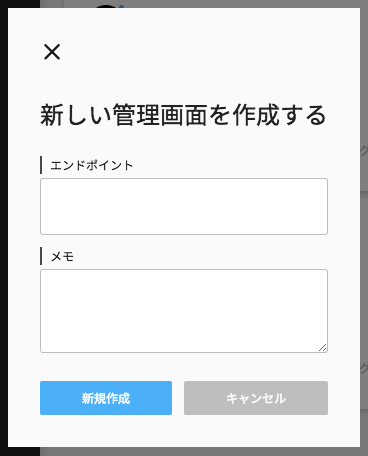

エンドポイントを新規追加する
Step1 - モーダルを開く

左カラムの新規追加ボタンをクリックして新しい管理画面を作成するモーダルを開いて下さい。
Step2 - エンドポイントURLを入力する

エンドポイント欄にエンドポイントURLを入力して下さい。エンドポイントURLが不明な場合は、サービスを運用している技術者に問い合わせて下さい。登録済のエンドポイントURLは使用できないので注意して下さい。
Step3 - メモを入力する
エンドポイントに対するメモを任意で入力出来ます。メモ内容はVironの動作に影響しないので安心して自由に入力して下さい。
Step4 - 作成する
入力内容に問題が無ければ作成ボタンをクリックして下さい。エンドポイント一覧にカードが追加されれば成功です。
FAQ - 作成ボタンをクリックしたらエラーが発生する
エンドポイントURLが存在しないことが原因かもしれません。サービスを運用している技術者に、エンドポイントURLが有効状態にあるか問い合わせて下さい。別の原因として、自己署名証明書が使用されていることも考えられます。自己署名証明書を使用している場合、お使いのwebブラウザでセキュリティ設定を行う必要があります。